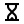

Principais Tags, Palavras-Chaves e Seletores/Propriedades
TAGS (HTML)
O que são?
Tags são blocos básicos do HTML, usadas para estruturar o contúdo de um página.
Elas são escritas entre sinais de maior e menor (<>), e geralmente vêm em pares: abertura <tag> e fechamento </tag>.
Exemplo
Para que servem?
Para dizer ao navegador o tipo de conteúdo que está sendo mostrado (um parágrafo, uma imagem, um link, um botão, etc.).
PALAVRAS-CHAVE (JavaScript)
O que são?
São palavras reservadas da linguagem de programação JavaScript que têm significados específicos e não podem ser usadas como nomes de variáveis ou funções.
Exemplo
Para que servem?
Para construir a lógica do programa, como declarar variáveis, testar condições, repetir ações, etc.
SELETORES (CSS)
O que são?
São "ganchos" que o CSS usa para encontrar quais elementos HTML ele deve estilizar.
Exemplo
Para que servem?
Para identificar os elementos HTML que receberão os estilos definidos.
Acesse aqui ⬇
Sites de Emojis, Caracteres, Fontes e Etc
Em estado de desenvolvimento 